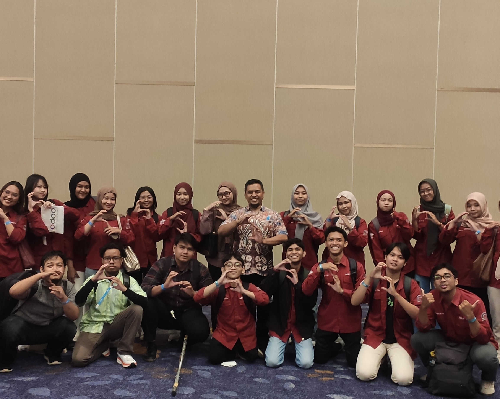

Helping organizations analyze workflows, model processes, and implement scalable digital solutions — from concept to execution.
Explore My WorkA blend of technical depth and organizational understanding — built across academic research and hands-on implementation.
End-to-end ERP implementation and optimization for organizations of all sizes.
Visual workflow mapping and process standardization using BPMN notation.
Hands-on CRM, Sales, Inventory, and HRM deployment with real business scenarios.
Certified IT Auditor — system compliance, risk assessment, and governance frameworks.
Deep-dive workflow evaluation, bottleneck identification, and optimization strategies.
Strategic technology adoption roadmaps tailored to organizational readiness.
Modern development workflows powered by AI tools for faster, smarter delivery.
Bridging the gap between technology capabilities and actual user adoption.
Practical, step-by-step digital solutions designed for small and medium enterprises.
I help organizations translate operational processes into structured, scalable digital solutions — practical, not theoretical. Every system I build starts with understanding the people who use it.
Every system I build starts with understanding the people who use it.

Real-world impact, proven results — from enterprise ERP audits to SME digital adoption programs.
Comprehensive ERP evaluation covering business process analysis, workflow optimization, operational alignment, and system governance assessment.
End-to-end User Acceptance Test documentation for enterprise ERP systems — validating workflows, usability, implementation readiness, and process conformity.
Facilitated business process mapping initiatives — workflow documentation, process standardization, operational manuals, and continuous improvement support.
Hands-on implementation support for SMEs adopting Odoo-based systems — simplifying operations, integrating workflows, and driving practical digital adoption.
I believe in learning by doing. My students don't just study theory — they work with actual industry tools, real business scenarios, and modern development workflows.
Odoo-based implementation with real business scenarios, integrated with BPMN process analysis.
Process visualization and workflow analysis supporting organizational standardization and digital transformation.
Modern stack with AI-powered development practices to prepare students for contemporary software engineering.
My research explores how organizations and individuals embrace digital technologies — from ERP systems to mobile payments, with a focus on practical, real-world adoption.
MCE — Global teaching technology standard
Badan Nasional Sertifikasi Profesi
IRCA — International Register of Certificated Auditors
Association of Information Systems — Indonesia Chapter
National Central University
Industrial Management
Institut Teknologi Sepuluh Nopember
Computer Science
Institut Teknologi Sepuluh Nopember
Industrial Engineering
I help organizations analyze business processes, model operational workflows, and implement practical digital systems using ERP, BPMN, and modern software technologies.
Let's build something that works.
Whether you need ERP implementation, process modeling, or digital transformation guidance — let's talk.